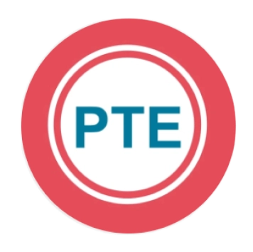

小圆PTE突击PTE Academic 题型速览
Part 1 · 口语与写作
INTRO QUESTION TYPE
Personal Introduction
个人介绍（不计分）
这题做什么
阅读屏幕提示后录制一段自我介绍，用来熟悉考试中的录音界面。
题干 / 材料25 秒准备
作答时间30 秒录音
计分技能不计入成绩

阅读屏幕提示后录制一段自我介绍，用来熟悉考试中的录音界面。
看到一段英文文本后，按原文把内容清楚、连贯地朗读出来。
听一遍短句，在提示音后尽可能准确地按原顺序复述整句。
观察图表、图片或示意图，并用自己的话有条理地描述关键信息。
听完一段讲座后，用自己的话复述主题、主要观点和重要细节。
听一个日常知识类短问题，用一个词或几个词直接给出准确答案。
听三人讨论后，概括共同主题、各方观点及观点之间的关系。
听读一个具体情景，并以合适身份、语气和目的作出完整口头回应。
阅读学术短文，将中心思想和关键支撑信息压缩成一个完整句子。
根据简短题目写一篇有明确立场、论证充分且结构连贯的议论文。
阅读带空格的文章，从每个空格的下拉选项中选择最合适的词。
阅读文章并根据内容或语气，从多个选项中选出所有正确答案。
把随机排列的文本框拖到正确位置，还原原文的逻辑顺序。
从备选词框中拖动词语填入文章空格；备选词数量多于空格。
阅读短文，分析题目要求，并从多个选项中选出唯一正确答案。
听一段录音后，用一段文字概括主要观点及重要支撑信息。
听完录音后，从多个选项中选出所有符合录音内容的答案。
边听录音边阅读屏幕文本，把录音中出现而文本里缺失的词键入空格。
听完录音后，从若干段文字中选出最准确概括录音的一段。
听一段学术主题录音，并从多个选项中选出唯一正确答案。
录音结尾的词或词组会被提示音替代，根据上下文选择最合适的补全项。
边听录音边看文字稿，点击文字稿中与实际录音不一致的词。
听一个短句后，在输入框中按录音的原词和正确顺序完整写出句子。